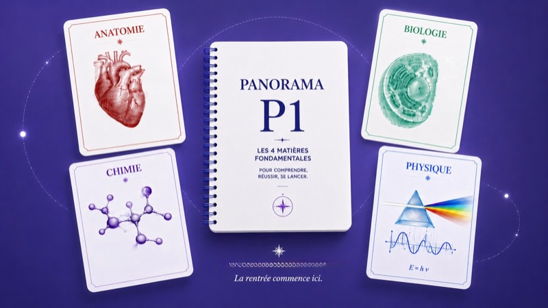

Le Parcours P1
Trouve ton métier de santé, entraîne-toi sur de vrais QCM, et regarde ta progression grandir.
Ton prénom sert uniquement à te parler normalement dans le parcours. Tu peux passer.
FacultatifDis-nous où tu en es
Pour te montrer les chiffres qui TE concernent — modifiable à tout moment.
TU ES…
LA OU LES FILIÈRES QUI T'ATTIRENT
Tu peux en choisir plusieurs — et changer d'avis en route. Découvrir les métiers, c'est justement le rôle du monde « Trouve ta voie ».
Ton point de départ
Les vrais chiffres de ta fac. L'effet mesuré de la préparation.
En 2 minutes : les vraies chances d'admission dans ta fac — et ce que la préparation y change.
Où penses-tu candidater ?
Tu peux en sélectionner plusieurs — hésiter entre deux facs, c'est normal.
Les vrais chiffres, voie PASS
D'une fac à l'autre, le taux va de 14,5 % à 43,4 % — le diplôme est le même. Moyenne nationale : 28,7 %.
Ces taux sont des moyennes. Ils mélangent des candidats très préparés et d'autres qui ont tout découvert en septembre. La suite sépare les deux.
Deux questions sur ton profil
TA MOYENNE GÉNÉRALE AU LYCÉE, EN GROS ?
Pas pour te juger — pour situer ton point de départ. La P1 se gagne à la méthode, pas au bulletin.
TU GARDES LA SPÉ PHYSIQUE-CHIMIE EN TERMINALE ?
Pourquoi ça compte : la P1 est remplie de chimie et de biophysique. Dans les enquêtes étudiantes, ceux qui gardent la spé réussissent presque deux fois plus souvent — terrain connu. Pas prise ? Ça se rattrape très bien : c'est exactement ce qu'une bonne préparation comble.
Voilà ce qui change la donne.
Le taux de ta fac est une moyenne qui mélange tous les scénarios — ces deux jauges en isolent deux. Même profil, même fac : seule la préparation bouge. Estimation construite sur les taux réels des facs et des enquêtes étudiantes.
Ce qu'il faut retenir
Profil identique. Fac identique.
Sans préparation : ≈ 12 sur 100
Ton scénario préparé : ≈ 47 sur 100
Ce ne sont pas les plus doués qui réussissent la P1 : ce sont les mieux préparés. La fac se choisit une fois, ton profil est déjà largement construit — la préparation est le seul levier entièrement entre tes mains.
Tes deux vrais choix, dès maintenant :
① Garde la physique-chimie si tu le peux — tu arriveras en terrain connu.
② Commence à préparer ta rentrée avant qu'elle arrive — un peu chaque jour suffit. C'est exactement ce que fait ton Parcours : deux fiches par jour, à ton rythme.
Des moyennes, pas une prédiction sur toi.
Comment ça marche
Un jour travaillé — une séance ou une ascension — fait grandir ta série de 1.
Un oubli est pardonné grâce à un jour de bonus — un seul. Deux jours sans venir, et elle repart de zéro.
Écris tout ce que tu retiens de la fiche.
Sans chrono, sans trophées. Juste toi et la question.
Sélectionne la ou les propositions exactes, puis vérifie. Personne n'attend que tu saches — tout est dans la leçon.
Étape franchie
Tu viens de terminer « Parle comme un médecin » : 3 notions travaillées, 2/2 QCM validés. La suite du parcours est déverrouillée.
Session terminée
2/2 QCM validés.
Un très bon passage. Les notions vues aujourd'hui reviendront dans quelques jours pour vérifier qu'elles tiennent dans le temps.
Demain dans ton programme : l'étape 2 — « Tes anciennes bactéries domestiquées ».
Garde ta progression
Ta progression est enregistrée sur cet appareil uniquement. Laisse ton email pour garder ta progression. Jamais de spam.
Crée ton compte pour entrer
Le Parcours et l'Arène suivent ta progression, tes trophées et tes erreurs — il leur faut un compte. C'est gratuit. La Bibliothèque, elle, reste en accès libre.
Le Parcours avance par groupes de 2 fiches. Choisis ton groupe du jour — les autres t'attendront : tout finit par y passer.
L'ascension démarre dans…
10 questions de ton niveau · le pot de trophées s'affiche sous chaque énoncé · prends ton temps, la vitesse ne rapporte rien.
Tant que tu n'as répondu à rien, ton ascension du jour n'est pas décomptée.
Quitter l'ascension ?
Elle s'arrête ici : les questions déjà jouées comptent, celles qui restent sont perdues.
Ton compagnon suit ta préparation — il grandira avec toi.
Ta photo de profil
Ta bannière
Gagne des trophées pour débloquer de nouvelles photos et bannières 🏆
Sélectionne la ou les propositions exactes, puis vérifie.
PRIMANT
Ascension terminée
Le décompte 0/10
Grade · Aspirant
Prochain grade : Primant
Ce qu'il te reste à travailler
Ta Bibliothèque
Médecin, dentaire, kiné, pharmacien, sage-femme… Leur vraie journée, leur salaire, et le chemin pour y arriver.

Quatre visites guidées complètes — anatomie, biologie, chimie, physique : ce que chaque matière attend de toi en P1, raconté de A à Z.
Rédigé par des étudiants ayant excellé en P1, en s'appuyant sur les études scientifiques de l'apprentissage — la théorie ET la pratique, réunies.
Ajoute un cours : l'agenda planifie ses révisions à J+1, J+3, J+7, J+14 et J+30, et te dit chaque jour ce qu'il y a à revoir.
Un exemple concret de semaine de P1, heure par heure : à quoi ressemble vraiment l'organisation d'une année réussie.
⚡ Réviser sans limite
Quatre stages guidés pendant vos vacances de Terminale qui vous transmettent les bases de la première année de santé. Un parcours qui reprend là où vous vous êtes arrêté, à votre rythme.
Un stage intensif juste avant la rentrée qui vous transmet les bases académiques et une méthode avancée. Vos questions trouvent une réponse à tout moment, et votre tuteur vous accompagne.
Étapes franchies 0/12
Score 0
Juge chaque affirmation — c'est exactement le geste de l'Arène.
Ta semaine
Ajouter un cours à suivre
Un cours appris aujourd'hui se revoit à J+1, J+3, J+7, J+14 puis J+30. Toi tu ajoutes le cours — l'agenda tient les dates.
Pourquoi les J fonctionnent
Ta mémoire oublie vite ce qu'elle ne revoit pas : c'est la courbe de l'oubli. Chaque révision espacée la remonte et l'aplatit un peu plus. Cinq passages courts battent une relecture marathon.
Ton profil
Ta préparation P1
Tes chiffres
Les points mesurent ton travail : ils comptent pour les grades de l'Arène et les étapes franchies.
Réglages
⚔️ Accès illimité
Une question sur une notion ?
Écris-nous sur Instagram : @medeos.sante — on répond en DM. Si tu veux, laisse ton @ pour qu'on te reconnaisse quand tu nous écris.
Espace parents · Confidentialité
Le Social arrive
Amis, duels chronométrés, classements entre vous — c'est en construction, et ça sera soigné.